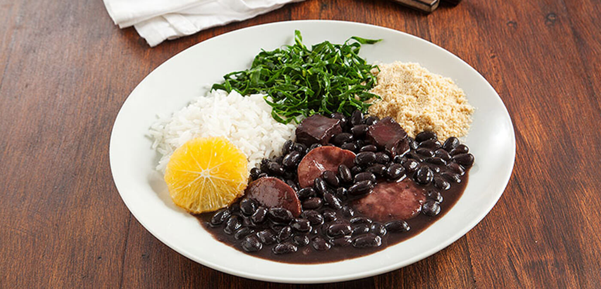
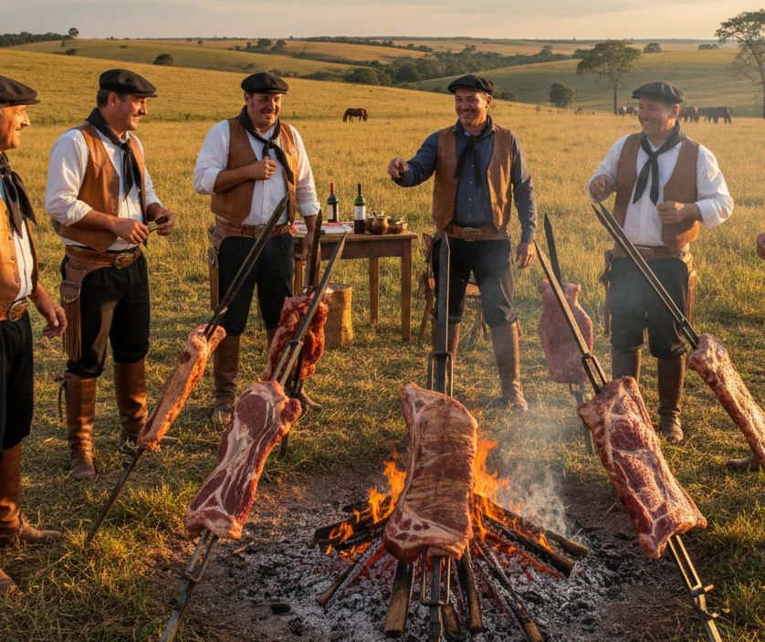
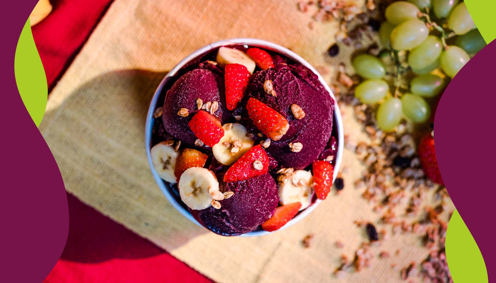

Sabores do Brasil
Uma viagem pelos sabores mais marcantes de cada região do pais
Pratos Típicos
A culinária brasileira reúne influências indígenas, africanas e europeias.

Feijoada
Considerada um prato nacional, a feijoada é um cozido de feijão preto com carnes de porco e de boi, servido com farofa, couve, arroz e algumas vezes laranja.

Acarajé
Bolinho de feijão-fradinho tradicional da Bahia, frito no azeite de dendê, recheado com vatapa, camarão e levando pimenta geralmente.

Moqueca Baiana
Ensopado de peixe com azeite de dendê, leite de coco, tomate e coentro. É feita cozida em panela de barro, e é um clássico da culinária baiana.

Churrasco Gaúcho
Tradição nos pampas gaúchos, feito com cortes nobres como picanha e costela que são assadas na brasa, acompanhados de chimichurri e arroz carreteiro.

Açai na Tigela
Polpa de açaí batida e servida gelada com granola, banana e mel, podendo conter outros ingredientes. É considerado um alimento extremamente nutritivo e benéfico para a saúde.

Brigadeiro
O doce mais amado do Brasil, feito com leite condensado e cacau, enrolado em granulado. Presente em toda festa brasileira, infantil ou não. Surgiu na cidade do Rio de Janeiro mas se difundiu rapidamente após a criação, estando presente em todos os Estados.